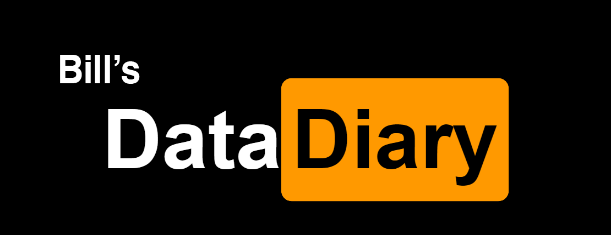
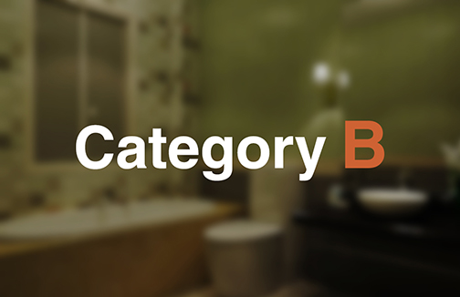

A Documentary of Bill Chen's Browsing History
In the last decades, internet culture and our browsing habits have become part of our characters.
Most would agree that our preference of sites can be complicated and difficult to present.
Therefore, I created a format that best portray my
browsing habit by separating them to Category A and Category B.
